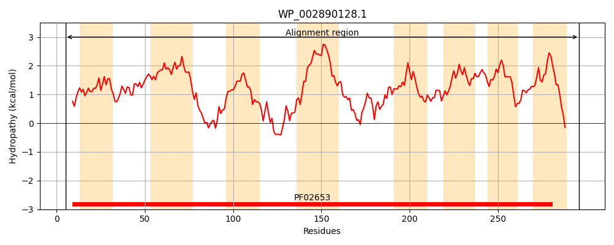
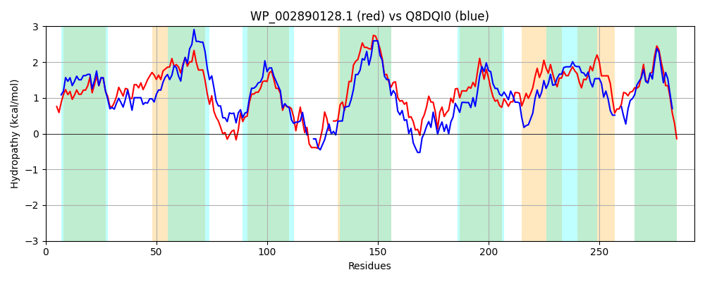

Hit Accession: Q8DQI0
Hit TCID: 3.A.1.4.10
Hit Description: gnl|BL_ORD_ID|16035 gnl|TC-DB|Q8DQI0|3.A.1.4.10 ABC transporter membrane-spanning permease-branched chain amino acid transport OS=Streptococcus pneumoniae (strain ATCC BAA-255 / R6) GN=livH PE=4 SV=1
Mach Len: 293
e:0.000000
Query TMS Count : 8
Hit TMS Count: 7
TMS-Overlap Score: 6.850000
Predicted Substrates:CHEBI:16857;L-threonine, CHEBI:17191;L-isoleucine, CHEBI:2539;alanine, CHEBI:9116;serine, CHEBI:25017;leucine, CHEBI:27266;valine
BLAST Alignment:
Score: 633 , Bit scores: 248 bits, E-value: 9.3e-82, Alignment length: 293, Percentage identity: 45
Query: 5 IFLQQVVNGMSLGGMYALIAIGYTMVYGVLRLINFAHADVMMVGAFSTLFLFSSVGLPFGVAVFLTLGLCGLFGMLIDRVAYRPLRQASKISMLITAIGVSFFLENLFNVLFGGSSRFFSAPDFFNQTR-AFGSVIITNVAWIVPLITVLLLLAILWLLYRTRYGMAIRAVAFDVNTVRLMGIDANRIISLVFALGSSLAALGGVFYSISYPTIDPLMGVLIGLKAFAAAVLGGIGSVTGAVLGGFILGFTEVVAVAIFPELGGYKDAFAFLFLILVLLFRPVGIMGDERLER 296
+ LQQ+VNG+ LG +YAL+A+GYTMVYG+++LINFAH D+ M+GAF FL +S + F VA+ + + + G++I+ +AYRPLR +++I++LITAIGVSF LE L G ++R F P R G + +TNV ++ I+++L++ + ++ +T+ G A+RAV+ D + +LMGI+ NR IS FALGS+LA GV ++ Y +++PLMGV GLK+F AAVLGGIG + GA LGGF++G E A A + ++DA + L+L+L+ RP GI+G E+
Sbjct: 3 LMLQQLVNGLILGSVYALLALGYTMVYGIIKLINFAHGDIYMMGAFIGYFLINSFQMNFFVALIVAMLATAILGVVIEFLAYRPLRHSTRIAVLITAIGVSFLLEYGMVYLVGANTRAF--PQAIQTVRYDLGPISLTNVQLMILGISLILMILLQVIVQKTKMGKAMRAVSVDSDAAQLMGINVNRTISFTFALGSALAGAAGVLIALYYNSLEPLMGVTPGLKSFVAAVLGGIGIIPGAALGGFVIGLLETFATAF--GMSDFRDAIVYGILLLILIVRPAGILGKNVKEK 291 | Protein Hydropathy Plots: |
|---|
|  |  |
Pairwise Alignment-Hydropathy Plot:
|
|---|
|  |